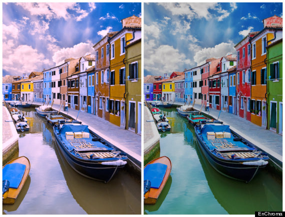

Vaishna's CSE Portifolio
Projects
Effectiveness of Simple Exercises on Color Blindness
Project ID: AHBS-253
September 2015 - March 2016
Project Objective: Color deficiency runs in my family from generation to generation. I wanted to determine if there was an inexpensive way to treat this disorder, without genetic modification.
In this experiment, color deficient subjects were asked to use color deficiency correction glasses while taking an online test. Then, they would do five eye strengthening exercises that were meant to train the brain. Next, the subjects would take the test again and were questioned for any visual changes. Finally, the average percent change for all the categories for each person were calculated and the average percent changes were averaged to result in the overall percent change. When analyzing the graphs, there was no correlation in the between the exercises and the scores. The data did not prove my hypothesis right. Also, there was an average -9.3% change between the two trials overall. However, many subjects noted that they could differentiate the colors better. In conclusion, there was a negative outcome for the scores when the exercises were done. The therapeutic method of eye exercises is not effective yet, but with further research about the eye, the brain and the transmission of signals between them, the experiment could be altered to a method that is as effective as the other upcoming methods.
Car Dodging Game
by Vaishna Prabhuvenkatesh and Vincent Nguyen
September 2017

The Cat Dodging Game is a game that me and Vincent Nguyen designed. The game featured a cat would dodge cars that would get infinitely faster as time progressed.
Project Objective:The goal of this game is to be repetitive and entertaining, practice coordination of the fingers, help strengthen reaction time, and offer progression for the user as they increase in skill.
Our game was inspired by the most engaging games that we played when we were developing ideas. The games have us a lot of ideas, but we decided that a car racing game because we thought it was easiest to code. We were initially planning to do a car racing game, but the car dodging game seemed more creative. Overall, we had a good understanding of our roles. While I suggested design concepts and changes that could be made to the game, my partner openly shared his opinions about the suggestions. We always knew what we were doing and weren't afraid to ask each to make changes.
Quiz Me
October 2017

Project Objective: The purpose of this game is to test the creative knowledge of players to see how they can answer seemingly random questions.
We began with diagramming our quiz questions and basic game concepts, then continued with the basic programming of the game. The game was designed to have a paragraph style answer. Along the way, we ran into a glitch with the application, but we overcame the hurdle by rebuilding the app, which did cause us extra time. The development of the app overall was good because we had positive, presentable results. We were not able to add different types of questions but we were able to add a good number of questions to the game.
Python Hangman Project
by Vaishna Prabhuvenkatesh and Justina Mathai
February 2018
The objective of this project was to design a Hangman game using Python code. Our theme for the game was "Animals". For our process, we focused on the source code of the games before adding a theme or display. We were able to have a finished product before the assigned deadline because we were successfully able to delegate our tasks equally and complete them quickly. What was different about this project from the other project is that there was a lot of trial and error, however, we were able to reach a solution quicker. The team dynamic was overall was pretty good. We always communicated with each other and assisted each other when we had struggles editing the code. We were open to changes in the code and listened to each other's suggestions.
Project 1.4.7 Image Artist
by Vaishna Prabhuvenkatesh and Justina Mathai
March 2018
Our objective for this project was to design logo for group that advocates for a political cause. Consistent branding for images that will be used to promote their cause are images that are memorable and will have a lasting impact on people. The cause we were advocating for was to build animal shelters nationwide. For the designing, we first designed the image on Google Drawings to give us an initial idea of what we wanted. Then, using PIL from python, we coded the image to make it look like the original design. Finally, we made adjustments and added more images. Overall, our team dynamic was very good, we both knew exactly what needed to be done. We helped each other when we didn’t know what to do. We improved our communication and application in this project; we were better at exchanging ideas and applying our knowledge from things learned in class to this project. However, even if we were able to apply our previous knowledge better, I feel that we didn’t realize that we could apply our knowledge to easier solutions to the issues that we had. I think that in future projects, we should look towards simple and effective solutions before focusing on more difficult ways of solving problems.